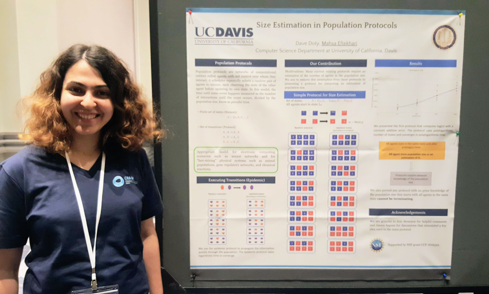

Hello! My name is Mahsa([mæhśɒː]). I am a computer science Ph.D. candidate at University of California, Davis. I'm doing research under the supervision of Prof. Dave Doty on distributed computing algorithms. I am broadly interested in the design and analysis of algorithms; specifically, I enjoy thinking about problems in distributed computing, molecular computation, and interdisciplinary fields that involve theoretical computer science.
Research Interests

With recent advances in DNA computation, scientists are on the verge of developing smart molecules that can communicate, perform tasks, and control matter at the nano level. To reach this initiative, as computer scientists, we should provide the theoretical foundation needed through the abstract models of molecular computing. My work is focused on a better understanding of distributed systems that model these physical systems and capture their dynamics to help biological computation scientists achieve their goals. I am working on population protocols, an appropriate model for electronic computing scenarios such as sensor networks, and ''fast-mixing'' physical systems such as chemical reactions, gene regulatory networks, and animal populations. I've researched problems like leader election, majority and consensus, exact and approximate counting, and counting in dynamic networks in population protocols.
Population protocols are a complete network of agents without no control over whom they will interact with. Instead, the agents communicate via a sequence of pairwise interactions among randomly chosen pairs of agents.
Dynamic size counting in population protocols
David Doty and Mahsa Eftekhari
SAND 2022: 1st Symposium on Algorithmic Foundations of Dynamic Networks
In this paper, we study the population size counting problem in the presence of an adversary who can add or remove agents arbitrarily at any time.
A time and space optimal stable population protocol solving exact majority
David Doty, Mahsa Eftekhari, Leszek Gąsieniec, Grzegorz Stachowiak, Eric Severson, and Przemysław Uznański
FOCS 2021: 62nd Annual IEEE Symposium on Foundations of Computer Science, (Feb., 2022)
BA in PODC 2021: Proceedings of the 40th ACM Symposium on Principles of Distributed Computing
arXiv
PODC BA Presentation
FOCS Presentation
We study the exact majority problem in population protocols. Assuming all agents hold one of the blue or red votes, the agents must compute which vote has more supporters.
The counting problem is that of designing a protocol so that n agents, all starting in the same state, eventually converge to states where each agent encodes in its state an exact or approximate description of population size n. In this survey paper, we describe recent algorithmic advances on the counting problem.
Message complexity of population protocols
Talley Amir, James Aspnes, David Doty, Mahsa Eftekhari, and Eric Severson
DISC 2020: Proceedings of the 34th International Symposium on DIStributed Computing
DISC
arXiv
DICS Presentation
We study population protocols with limited agents who can send/receive constant size messages in their interactions. Although many researchers studied large state (polylog(n)) and\or constant state population protocols, as far as we know, no research considers the intermediate model with agents with large memory but limited message size.
We consider the problem of counting the number of agents in population protocols. This paper presented a polylog(n) state protocol approximating the population size (n) within a constant additive factor. The approximate counting problem is motivated by many existing protocols that assume the population size is known to the agents in advance.
Exact size counting in uniform population protocols in nearly logarithmic time
David Doty, Mahsa Eftekhari, Othon Michail, Paul Spirakis, and Michail Theofilatos
BA in DISC 2018: Proceedings of the 32ndth International Symposium on DIStributed Computing
DISC BA
arXiv (full version)
We presented the first sublinear time protocol for the exact population size counting problem in which the agents must calculate the population size (n) exactly.
Hobbies
Painting,
Hiking,
Running